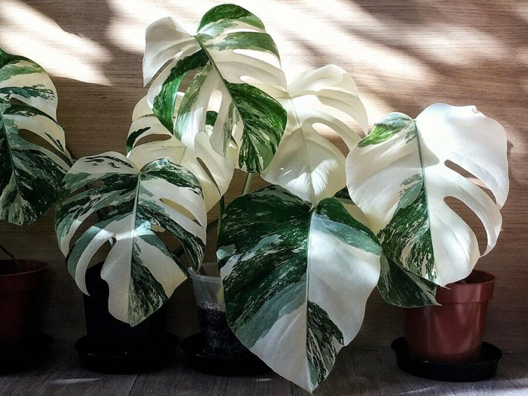

 The Monstera 'Albo Variegata' is a highly sought-after cultivar of Monstera deliciosa. Prized for its striking white or cream variegation on its green leaves, which occurs due to a genetic mutation.